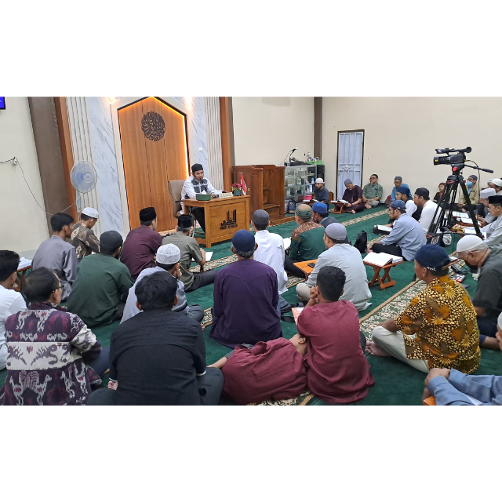
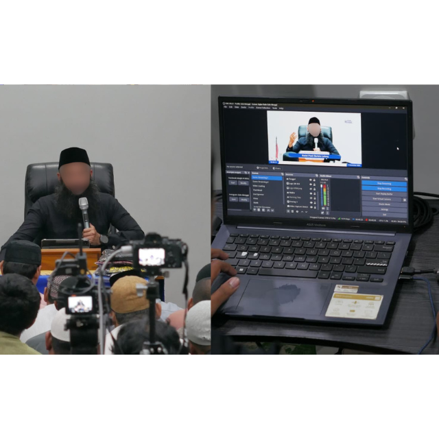

Pengadaan Alat Mic Wireless Saramonic Ultra
Wakafkan Suara Dakwah, Raih Pahala Jariyah
Bantu kami menghadirkan kualitas audio terbaik untuk live streaming kajian Islam agar ilmu dapat tersebar luas dan lebih jelas didengar oleh kaum muslimin.
Terkumpul
Rp 400.000
Target Donasi
Rp 3.800.000
Mengapa Ikut Berdonasi?
Pahala Jariyah
Setiap ilmu yang didengar melalui alat ini akan mengalirkan pahala jariyah.
Kualitas Dakwah Maksimal
Suara jernih memastikan jamaah online dapat menyimak kajian dengan fokus tanpa gangguan.
Mendukung Syiar Islam
Berperan aktif dalam menyebarkan kebaikan dan ilmu agama Islam.
Bukti Kegiatan Kajian Kami
Beberapa kajian yang telah kami selenggarakan secara rutin dan disiarkan live.

Antusiasme Jamaah Hadir

Proses Live Streaming